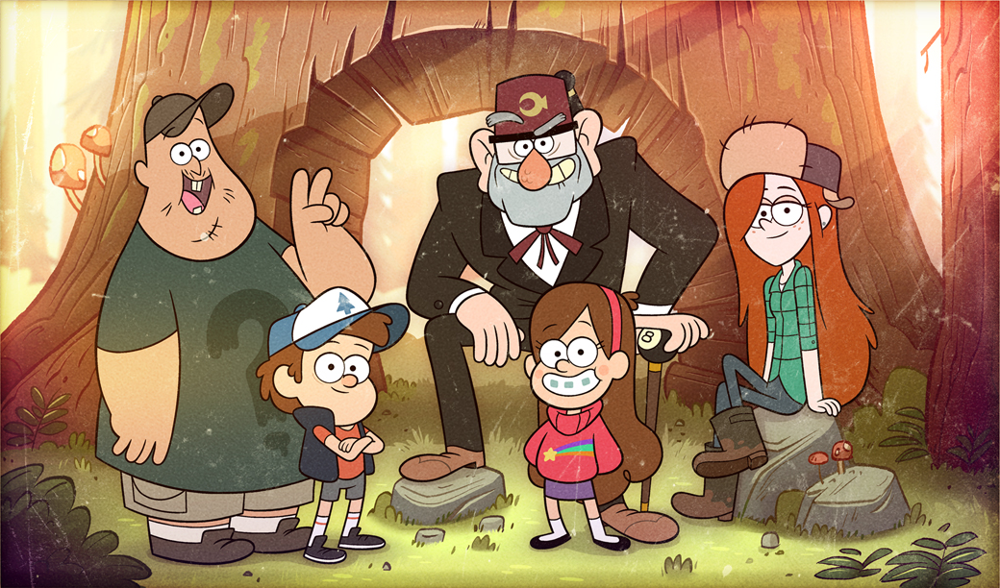

Proceso
¿Que pasos seguimos para hacer la aventura grafica?
Elección de la Temática
Antes de comenzar a producir la aventura, discutimos qué serie o universo narrativo queríamos utilizar. Finalmente elegimos Gravity Falls porque es una serie que nos encanta, tiene una estética muy reconocible y, sobre todo, ofrece un mundo lleno de misterio que se presta perfectamente a una historia interactiva con decisiones.
Escritura del Guión
El primer paso creativo fue escribir un guion base. Empezamos redactando una historia lineal, con un único final, y luego trabajamos sobre ella para identificar en qué momentos podían aparecer decisiones alternativas que llevaran al jugador hacia otros caminos y finales posibles. Esta etapa nos permitió definir la trama, los personajes participantes y el tono general de la aventura.

Diseño del UserFlow
Con el guion listo, realizamos un userflow: un esquema visual donde representamos todos los caminos, bifurcaciones, decisiones del jugador y posibles finales. Esto nos ayudó a ver la estructura completa de la aventura de un vistazo, corregir inconsistencias, ordenar la progresión de escenas y asegurarnos de que todas las rutas fueran claras y coherentes.

Generación y edición de imágenes
Para ilustrar cada parte de la aventura, generamos imágenes utilizando Gemini.Luego, editamos varias de ellas para quitar el fondo o adaptarlas al formato de botones y pantallas que necesitábamos dentro del juego. El objetivo fue mantener una estética similar a la de la serie, pero adaptada al estilo de nuestra aventura gráfica.

Implementación en p5.js
Una vez que la narrativa y las imágenes estuvieron listas, comenzamos la etapa de programación. Construimos la aventura como una máquina de estados, donde cada escena o momento del juego corresponde a un estado distinto. Organizamos todos los textos en arreglos para poder llamarlos según las decisiones del jugador. Incorporamos sonidos tanto para los botones como para acompañar la ambientación con música de fondo. Finalmente ajustamos transiciones, botones y lógica interna para que la experiencia fuera fluida y clara para el usuario.